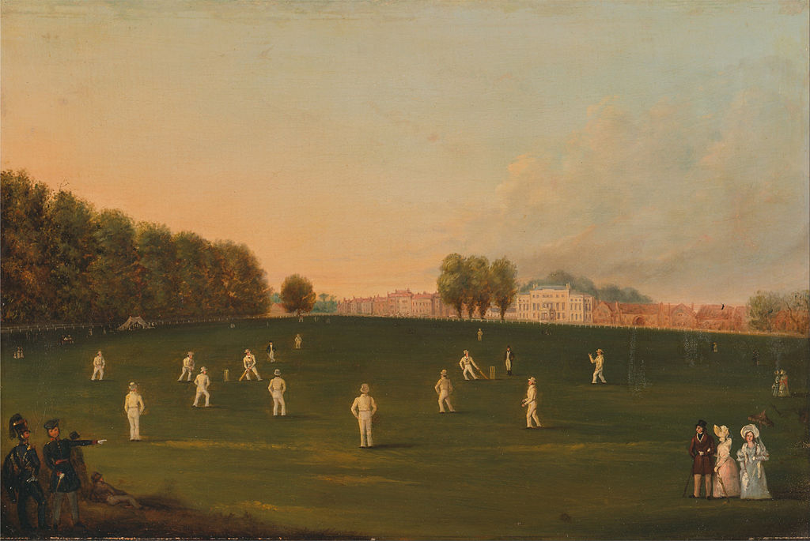
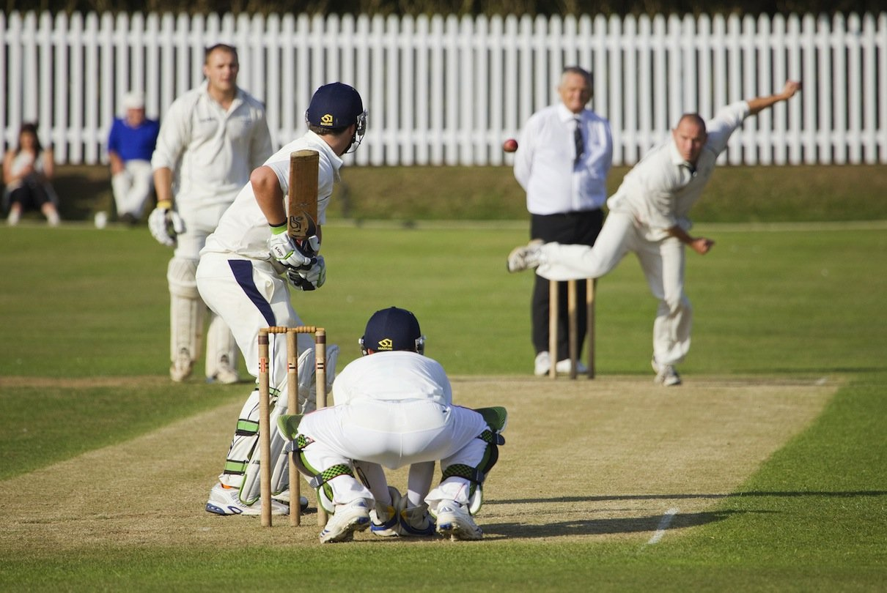
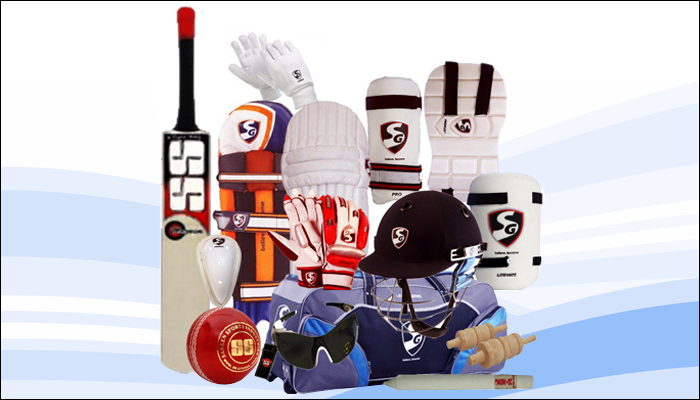
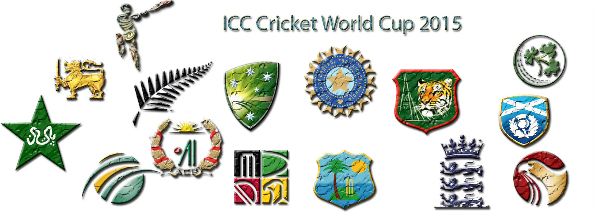
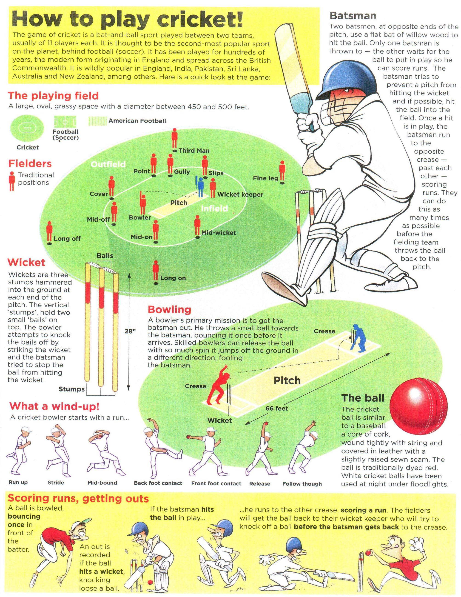

History Of Cricket

Cricket the game has a known history from late 16th Centuray. It started in the south-east England. In 18th Century, it became England national sport. In 19th and 20th centuries it is developed globally. Internationally cricket matches have been played since 1844. International test cricket began in 1877.
Cricket Format

There are three format of Cricket. Test match, One day internation cricket match, T20 matches
- Test Cricket: It played between two teams of 11 players play a four-innings match, which may last up to five days.
- One Day International: Is a limited over cricket game played between two teams with internation level. Each team play fixed number of overs*, usually 50.
- Twenty20 Cricket: It is a short form of Cricket where two team of 11 players play twenty (20) over game.
- *Overs: 6 ball consider of 1 over.
Cricket Accessories

Cricket accessories consist of
- Bat
- Ball
- Footwear
- Apparel
- Protective Gear ( Batting golves, batting Legguards, Wicket keeping leg Guard, Wicket keeping gloves, Abdominal guards, Thigh pads, elbow guards)
- Stumps
- Helmet
Cricket Teams

Internation Cricekt Teams are:
- Afghanishtan
- Australia
- Bangladesh
- Canada
- England
- India
- Hong Kong
- Ireland
- Namibia
- Netherlands
- New Zealand
- Pakistan
- Scotland
- South Africa
- Sri Lanka
- United Arab Emirates
- United State of America
- West Indies
- Zimbabwe
How to Play
Here is the quick guide how to play cricket
